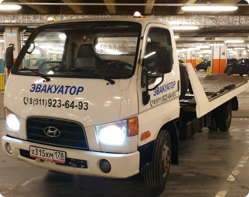

| Легковой автомобиль | 5 000 руб |
| Мотоцикл (квадроцикл и т.д) | 3 000 руб |
| Внедорожник | нет |
| Микроавтобус | нет |
| Загородный тариф | 50 руб/км |
Эвакуатор

Эвакуатор авто. Всегда на связи! Быстро и надежно